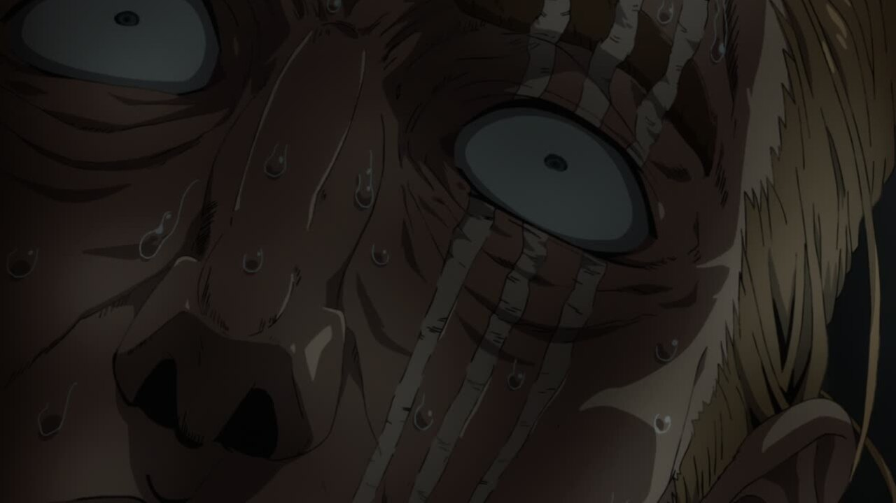
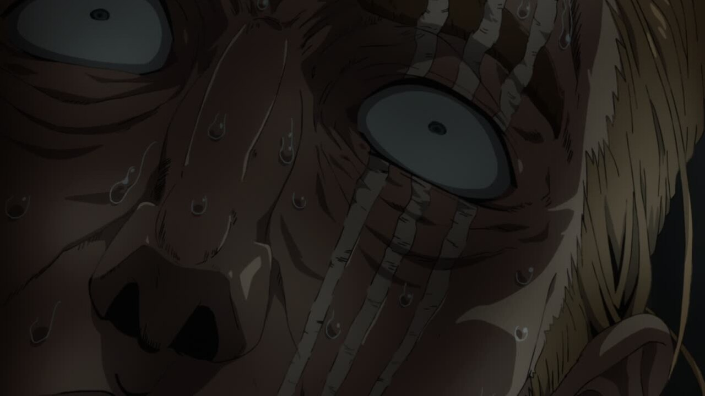

Season 2: Episode 1 - Return of the Hero
Hello everyone, and welcome to season 2! This season was among one of the most controversial parts of the OPM franchise, but the Blu-Ray release brings some great changes! Throughout this guide, I'll be looking at every single change from the TV version to the Blue Ray, down to the pixel.
Let's take a look!
- Our first change of the season is was a massive talking point in the OPM community: Genos's Shading! Though it's not a total reshade, the highlights and general metallic feel is brought out a bit better.
- Saitama also gets some love with a redraw + reshade, removing the odd bottom shadow and reworking his facial proportions in a much needed improvement:
- Saitama also gets redrawn here, with his head rounded out and his forehead a bit more reasonably sized, and the HiZiki text on the box is darkened:

- Saitama gets another touchup in this shot, as well as a name change in the opening credits on the bottom right. I don't know Japanese, so if anyone can read what the change was, let me know what the difference is. Also, if you noticed, the HiZiki text is back to grey for whatever reason.
- The positioning on a lot of the elements of this shot are different, and the beige building was recolored to brown:
- King's legs get a redraw/reshade, and a little timing change in his walk cycle.
- This change is the first example of arguably the best feature of the BD: NO GHOSTING! This shot only had 2F ghosting, meaning each frame was on screen for two frames. This is the best case scenario for ghosting, but the sharpness and brightness of the unghosting is still extremely refreshing to see.
- The background characters have new fist pumping animations.
- The shadows on the girls' are now smoothed, rather than sharp. I'm not sure of the logic behind this change to be honest.
- The background characters get some position changes, pose changes, and some new mouth flaps. Thankfully though, Tounge Stretcher is still thick as hell.
- The glassess in this shot get new shading, and the girl on the far left finally gets some bangs to cover up her lack of eyes.
- The other background characters no longer shorter than the guy in the green jacket.
- This shot of Genos and Saitama now contains a parallax zoom, rather than just being a still shot.
- Genos is moved like 3 pixels:
- The light in the bathroom is not ghosted, so it flickers properly.
- idk tbh
 

- King's Nose gets a shadow correction.
- The smoke here is totally different, with it now covering Genos at the beginning and being on top of the flying piece of metal.
- However, this shot's "smoke" is lifted as the 7 FRAME GHOSTING of the TV version actually contains a really nice cut of un-ghosted animation.
- The perspective of this shot is changed, as well as the position of quite a few things.
- The Demon Cyborg gets more un-ghosted love as the 4-frame ghosting of these two shots are removed.
- something about the background
- This unghosted (3F) attack sequence looks like something straight out of Season 1.
- In less exciting news, king's animation gets retimed here:
- King gets moved a bit here, and gets proper mouth shadows.
- And a few minor lip flap changes.
- Saitama gets yet another facial redraw here:
- Saitama's mouth is moved slightly.


- Saitama's mouth is moved slightly.
- The speedlines around King were unghosted and a vignette was added to the shot.
- The 4F Ghosting on this shot gets removed and Genos is no longer a blurry mess:
- King gets wider shoulders, while Saitama gets the opposite treatment. Both get some new lining:
- Saitama has a few lip flap changes in this shot.
- King is now consistenly in this shot, and Saitama is the one being scaled up.
- Saitama is moved further away form King, who gets a skinner redraw here. Also, Saitama's shoes are removed from outside.
- Fuck it, bird

- The rubble is removed from this shot.
- Aside from the water animation being retimed and having some new frames, there is also some odd camera motion blur that was removed from cut.
That's Episode 1! Though many of the changes were shading or composition related, there were some awesome cuts of un-ghosted animation in there. I haven't had the chance to look frame by frame at Episode 2 yet (I will, don't worry,) but watching it as a whole was awesome, and I anticipate even more great changes when I take a closer look.
I hope you enjoyed the comparison!